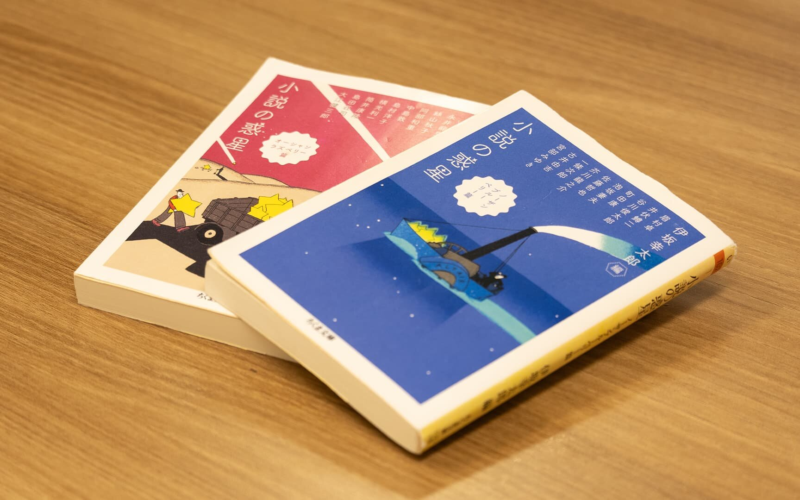

いつもと違う小説を読みたいと思ったときにやったこと（デザイナーizumiの場合）
こんにちは。デザイナーのizumiです。
私は通勤時間に小説を読むのが日々の癒しなのですが、先日ある困ったことがありました。
お気に入りの作家の作品を刊行された順に読んでいたところ、とうとう過去作をすべて読み切ってしまったのです。
通勤時間のお供を探すために
新刊が出るのはまだ先だし、これまであまり他の作家の開拓をしてこなかったので何を読めばいいのか分からないし、有名な文学作品もそういえば手をつけていない...。
私に合う通勤時間のお供を探すにはどうしたら良いだろうか...？
そんなときに助けになったのが、様々な作家の作品を一冊にまとめたアンソロジー形式の短編集でした。
最初に手に取ったのがこちらの二冊です。
-
小説の惑星 ノーザンブルーベリー篇
https://www.chikumashobo.co.jp/product/9784480437709/ -
小説の惑星 オーシャンラズベリー篇
https://www.chikumashobo.co.jp/product/9784480437716/
（ともに伊坂 幸太郎 編）
この本の説明にはこう書いてあります。
「小説の凄さ」を知りたいけれど、一体何から読めばいいのかわからない。物語は好きだけれども、小説以外に漫画や映画、アニメ、舞台、数多のエンタメ作品はある―。そんな人にこそ届けたい、作家・伊坂幸太郎が究極の短編だけを選んだ二冊のアンソロジー。小説って、超面白い。青色が目印のノーザンブルーベリー篇！編者による書き下ろしまえがき（シリーズ共通）＆各作品へのあとがき付き。
「なんて今の私にぴったりなんだ！」と、さっそく喜び勇んで読み始めました。
もともと編者である伊坂幸太郎作品のファンであることや、彼がどのような思いでその作品を選んだのかが書いてあることも、さらなる決め手となりました。
ついつい同じカテゴリーや現代作品ばかりを読んでしまっていたところに、ちょうどよく手を差し伸べてくれる形になったわけです。
知らなかった世界の思わぬ広がり
この本がきっかけで読み始めたのが、島田荘司作品です。遅まきながら『御手洗潔シリーズ』を読み始めました。まだ二冊目を読了したところですが、このシリーズは漫画化やドラマ化もされているので、追っていくと沼にハマりそうです（笑）。
他にも、井伏鱒二が太宰治と親交があったことを知って、三鷹にある『太宰治展示室 三鷹の此の小さい家』に企画展を見に行ったり、好きなイラストレーターさんが宮部みゆき作品の装画を描いていることに改めて気づいたりと、知らなかった世界が思いもよらぬ方向へと広がり始めました。
そうこうする中で、一度でも「読みたい！」と思った本は、忘れないようにストックしておかなければなりません。
私の場合はAmazonのほしい物リストに本専用のものを作って、「読みたい！」と思った時にすぐに検索＆登録しています。（時系列順にたまっていくので、タイトルだけ見るとなんの脈絡もない並びになることも多く、たまに見返すと面白いです。）
世界が広がったことで気づいたこと
「通勤時間に本を読む」という目的で始めたことが、気づけば興味関心を幅を広げ、本の世界にとどまらず作家の背景にも思いを巡らすことになるとは、初めは思ってもみませんでした。
職業柄、デザイナーやアーティスト、実業家や経営者などの背景を調べることはあっても、お恥ずかしながら「そういえば小説の作者の背景はこれまでほとんど調べたことがなかった...」と気づいたのです。
それからは、芥川賞や直木賞、本屋大賞などの受賞作品やノミネート作品にも興味を持つようになったり、最近では好書好日という本の情報サイトなども参考にしたりするようになりました。
今はまだ国内の作家ばかり読んでいますが、いずれは海外の作家にも手を出したいと目論み中です。（海外のミステリードラマが好きなので、その原作あたりから当たっていこうかと思っています。）
まとめ
ちょっとしたきっかけで世界が広がることを経験すると、「もっと広がるんじゃないか」と思ってついつい欲張りになってしまいがちです。
しかし本を読む時間にも限りがあるので、ほしい物リストを眺めながら、その時の調子に一番合いそうな本を選んで少しずつ読み進めています。
次の「お気に入りの作家の作品をすべて読み切ってしまった日」は当分先になりそうです。
関連記事

お仕事のご相談、採用についてなど、お気軽にお問い合わせください。